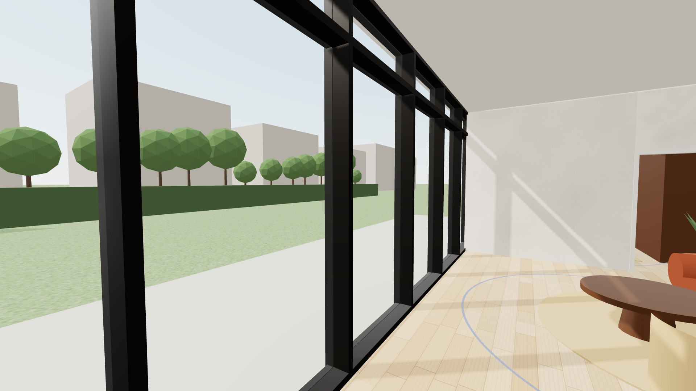

<section id="live">
<p class="eyebrow">During the walk</p>
<h2>Every look lands on a spec</h2>
<div class="row2" style="gap:48px">


</div>
<p class="foot">Visual Vibes · glazing study · Observer mode, live</p>
<aside>This is the Observer view while someone walks. The crosshair is on a curtain-wall mullion 2.2 m away, and the panel already shows its metadata: the unitized system, the 1455 mm module, the transom at 2.7 m, the frame and the glass make-up with VLT, g-value and U-value. The participant sees none of this in Subject mode.</aside>
</section>
